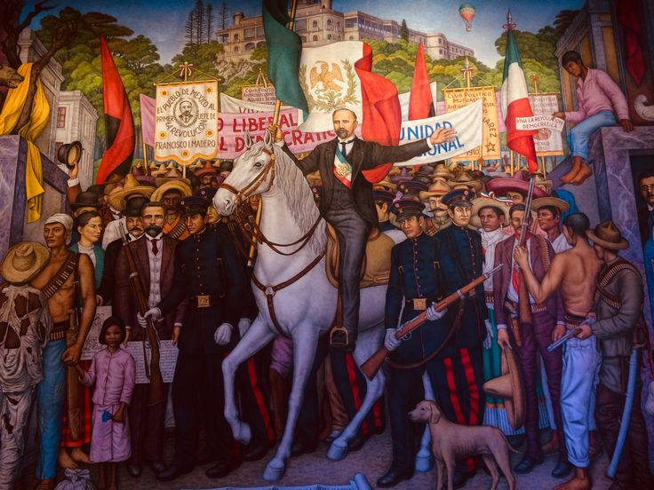

El México Conservador del siglo XIX
Ser conservador....
En el México del siglo XIX significaba la preservación de las instituciones tradicionales heredadas del periodo colonial
Consideraban que el orden, la religión y la autoridad eran indispensables para mantener la estabilidad del país
Ideas Conservadoras
- Defensa de la religión católica
- Protección de los privilegios de la Iglesia y del Ejército
- Gobierno Centralista
- Mantenimiento del orden social y tradicional
- Apoyo a un gobierno fuerte
Liberales vs Conservadores
Esta diferencia provocó conflictos que marcaron la historia como:
- La Guerra de Reforma
- Inició con la promulgación de la Constitución de 1857
- La Intervención Francesa
- Inclusión de una Monarquía en el país
Ser liberal o conservador era una postura que definiría la forma de organización del Estado
Iglesia Católica en el México del siglo XIX
Características
- Era la religión oficial de México
- Poseía grandes extensiones de tierra y riqueza económica
- Administraba escuelas, hospitales, asilos y beneficencia
- Registraba nacimientos, matrimonios y defunciones
- Contaban con privilegios legales conocidos como fueros eclesiásticos
- Mantenía estrecha relación con los grupos conservadores
Influencias
- Política
- Participó en los debates sobre la organización del país
- Educación
- Controló gran parte de la enseñanza con principios de la fe católica
- Economía
- Principal propietario de tierras, otorgando préstamos
- Sociedad
- Guiaba las normas morales, las costumbres, las festividades y parte de la vida comunitaria
- Conflictos
- Su poder fue cuestionado por los liberales, quienes impulsaron las Leyes de Reforma,
para eliminar sus privilegios y nacionalizar sus bienes
Modelos de organización política
| Centralismo |
Federalismo |
| El poder político se concentraba en el gobierno |
El poder se distribuye entre gobiernos federal y estados |
| Los Estados se convertían en departamentos subordinados al gobierno central |
Los Estados conservan autonomía para gobernar asuntos internos |
| El presidente tenía amplias facultades para tomar decisiones |
Existía un equilibrio entre los poderes federales y estatales |
| Buscaban mantener el orden mediante un gobierno fuerte y centrado |
Favorecía la participación política de las entidades federativas |
Recursos complementarios
Video explicativo
En este video se explica el tema de manera sencilla para reforzar lo aprendido.
Canción relacionada
Esta es una canción relacionada con los acontecimientos o ideas principales del tema.